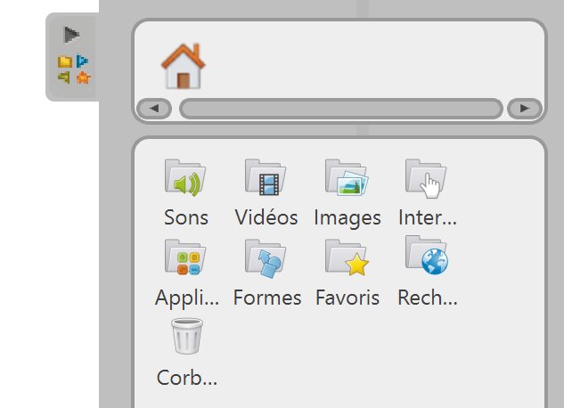
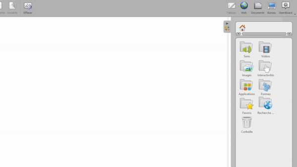
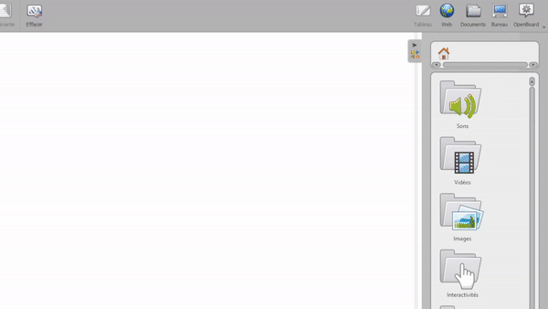

Greifen Sie auf Ihre Bilder zu und organisieren Sie sie
In OpenBoard können Sie von Ihrem aus auf verschiedene Arten auf Bilder zugreifen und diese hinzufügen Bibliothek. Letzteres befindet sich auf der rechten Seite des Bildschirms. Hier können Sie auch Sounds und Videos speichern und verschiedene Anwendungen finden.

Organisieren Sie Ihren Bilderordner
Zur Bibliothek hinzugefügte Screenshots werden im Ordner gruppiert . Sie können erstellen Unterordner über (unten in der Bibliothek) und ziehen Sie Ihre Bilder dann per Drag & Drop in die verschiedenen erstellten Ordner.

Fügen Sie Bilder von Ihrem Computer hinzu
Sie können Ihre eigenen Bilddateien direkt in OpenBoard importieren, wie unten gezeigt:

Fügen Sie Bilder aus dem Internet hinzu
Sie können auch nach suchen lizenzfreie Bilder über integrierte Suchmaschinen, befindet sich im Ordner Websuche .